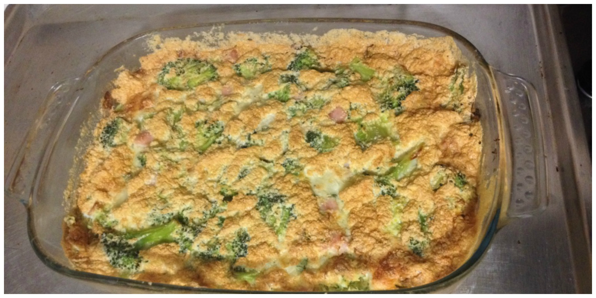
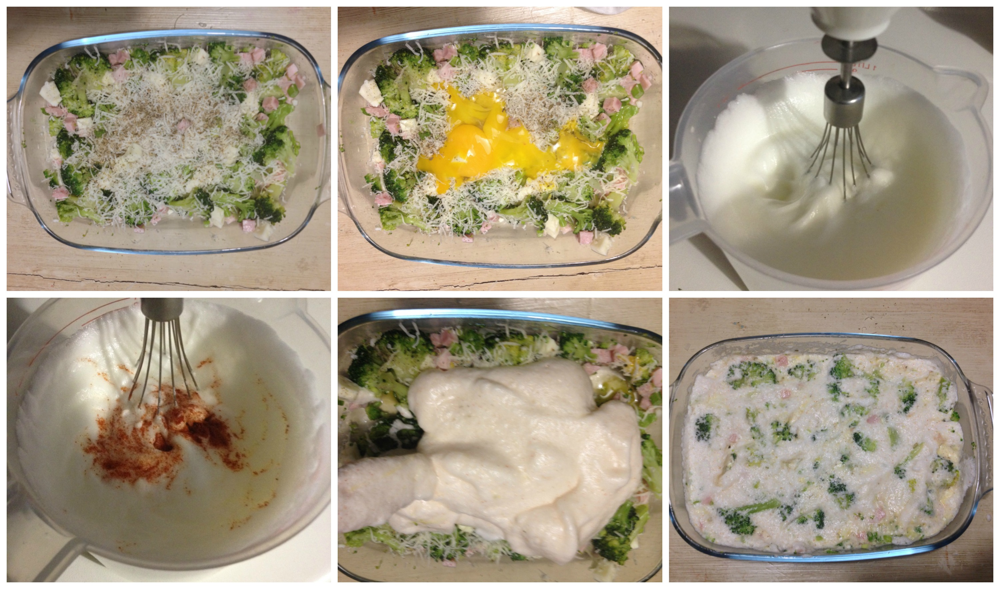

Broccoli and ham soufflé¶

- Serves: 4
- Type: starter
Ingredients¶
- 500 grams cooked broccoli
- 150 grams diced ham or prosciutto cotto
- 4 eggs
- salt and pepper to taste
- 50 grams grated parmesan cheese
- 1 tablespoon dried parsley
- 1 tablespoon paprika powder
Steps¶
Place the cooked broccoli in a greased pyrex
Add the grated parmesan and diced ham
Separate the egg whites and yolks
Add the egg yolks to the broccoli
Beat the egg whites until they form stiff peaks, add salt and pepper, paprika and parsley.
Pour the egg whites mixture to the pyrex.
Mix delicately all the ingredients
Bake at 180°C for half hour
Preparing the soufflé